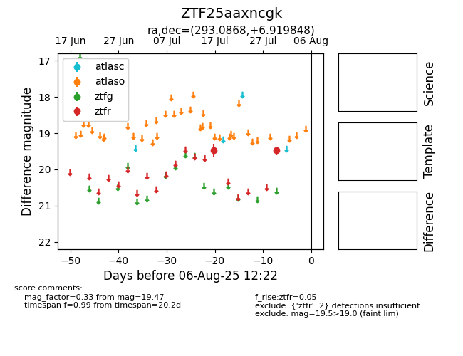

Target ZTF25aaxncgk at 2025-08-05 20:15, see:
FINK: fink-portal.org/ZTF25aaxncgk
Lasair: lasair-ztf.lsst.ac.uk/objects/ZTF25aaxncgk
ALeRCE: alerce.online/object/ZTF25aaxncgk
alt names
ZTF25aaxncgk (ztf,fink)
coordinates:
equatorial (ra, dec) = (293.0868,+6.91985)
galactic (l, b) = (43.8019,-5.85051)
photometry
last ztfr=19.47
2 ztfr detections
